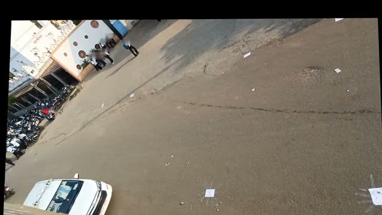
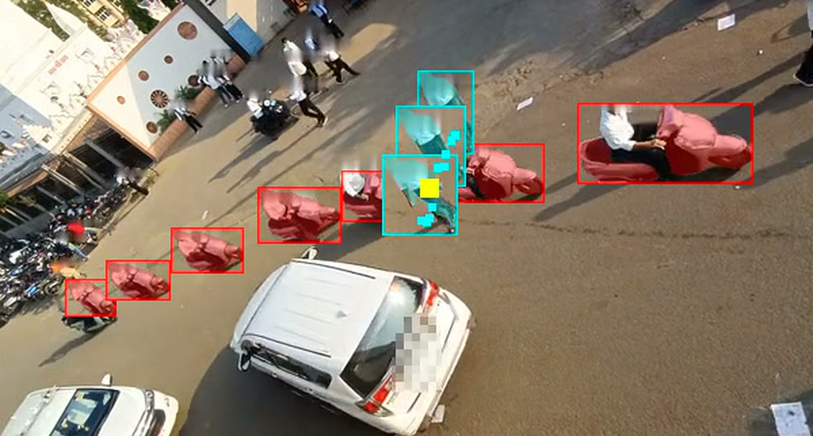
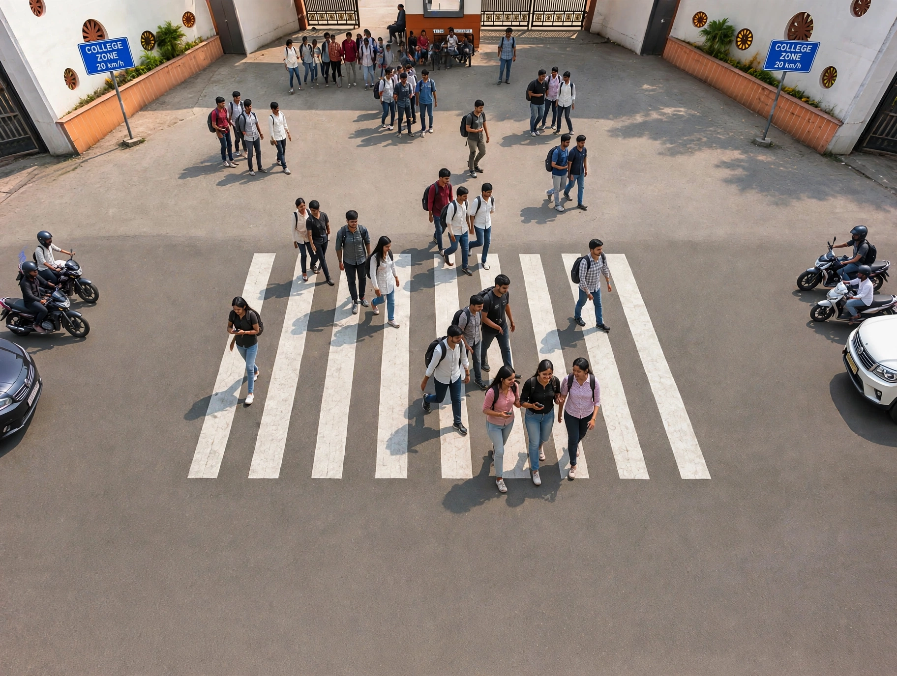

Sadak ka khatra, naap ke, saboot ke saath.
Outside every school and college in India, people cross a road where vehicles pass close and fast. The school wants a crossing; the road belongs to the government; permission needs evidence. Crossing Watch turns one phone video into that evidence: measured near-misses, a map in metres, and a letter whose every number is checked by code.
Every afternoon, the same crossing.
A service road under the highway. No zebra, no signal. At dismissal, students pour out of the gate into motorcycles, autos and buses. Everyone knows it is dangerous. Nobody had a number.

Filmed from the highway, measured on the road.
Eight sheets of A4 taped on the road, 8 m by 7 m, turn pixels into metres. Two more lines 15 m apart are never used for the maths: they are the check. The video read them as 15.0 m.
- A phone, held high
- A tape measure and eight sheets of paper
- Twenty minutes at dismissal
A person and a motorcycle, on the same spot, at the same instant.
Post-encroachment time is the gap between a person and a vehicle reaching the same spot. Under 1.5 s is serious. This one had none.

Motorcycle at 18.7 km/h. Two serious near-misses and three close passes in 8.6 minutes, on the taped 15 m stretch alone.
Meta's models do the seeing. Code does the checking.
SAM 3.1 follows every person, motorcycle, auto and bus by name. The road plane turns their paths into metres and seconds. Muse Spark looks at each person in a near-miss and throws out riders and shadows. Muse Wonder listens around each event for horns and brakes.
A letter the college can sign.
Muse Spark writes it from the measurements only. Code checks every number against the data; legal quotes are added by code, never by a model; two judges read it for any claim the measurements do not support.
"3 of 51 crossings had a moving vehicle through the same spot within 3 s of the person. 1 of 51 had a vehicle within 1.5 s. I request a raised zebra crossing with 20 km/h zone signs at this gate. I offer to share the video for review."From the letter. The Head of Department signs it for the college on 3 November. Only "filed, reference X" is ever written here.

From a gate to the road authority.
The signed letter and the evidence page go to the road's owner through the national grievance portal, CPGRAMS. The letter's sha256 is printed on the page, so the paper matches the proof.
- Evidence page and blurred clips enclosed
- Every number re-checkable at $0 from the repository
- CPGRAMS · Ministry of Road Transport & Highways · 3 November
The crossing we are asking for.
A raised zebra crossing with 20 km/h zone signs, drawn by Muse Image onto the real, blurred street, only inside the band where people were measured crossing. Every other pixel is the real road.

- Film two dismissals again from the same spot
- One-sided Fisher exact test at 5%, written before any fix exists
- The drop counts only if both counts fall
Meta's open models, doing the real work.
Muse Glimmer 30B wrote our real gate's letter on Kaggle's free T4s, first try. Our fine-tuned Glimmer judge beats Muse Spark Open in three pre-registered blind tests, at a quarter of Muse Spark's cost, and was served live on Fireworks.
Every number re-checks from the repository: OPEN_WEIGHTS.md · JUDGES.md · GATES.md
One phone. One tape. One afternoon.
Any school or college in India can do this. Python 3.11 and ffmpeg; no key and no video needed to build the sample page: python3 pack.py sample sample/site.json